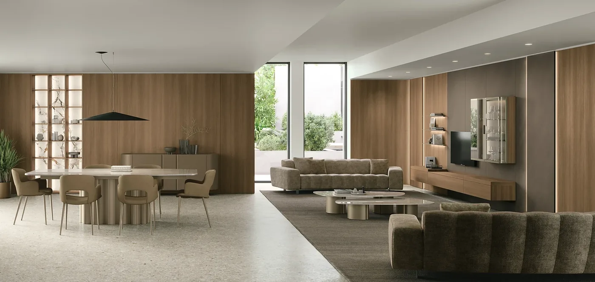
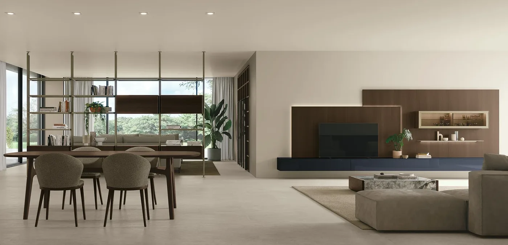
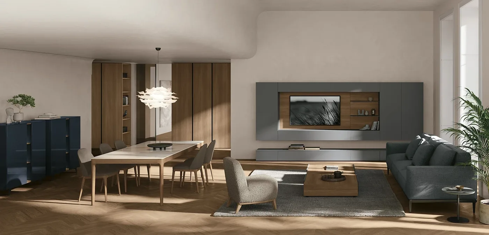
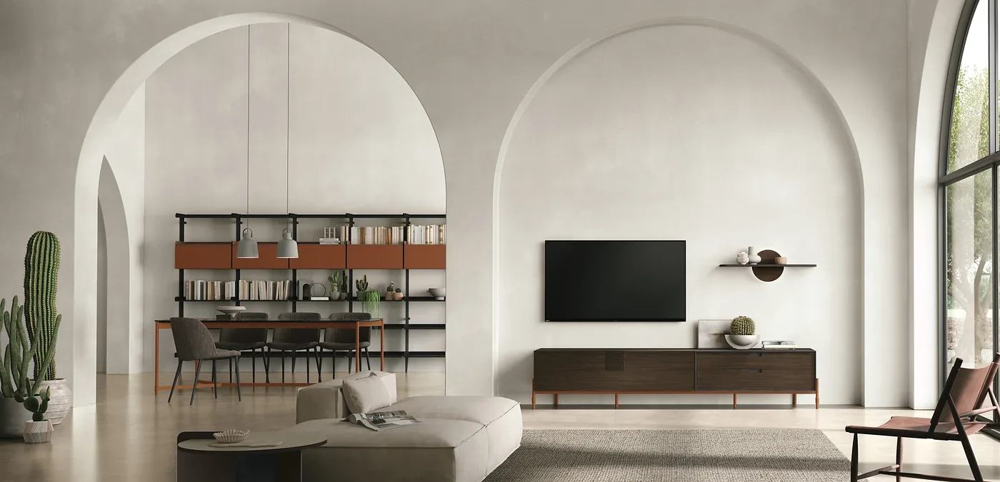
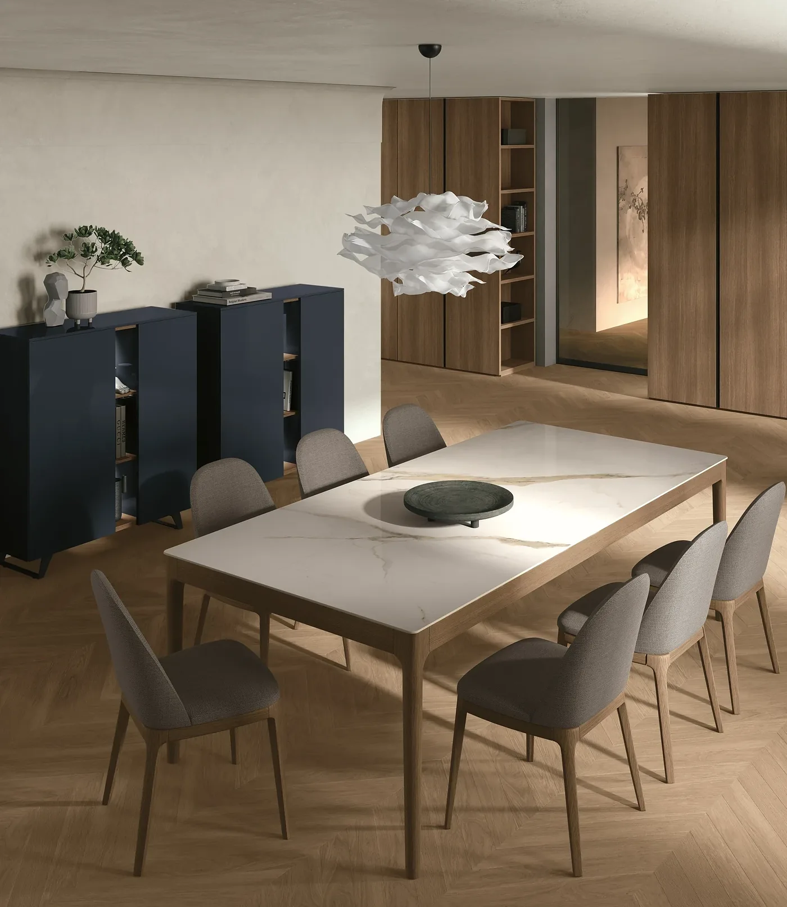
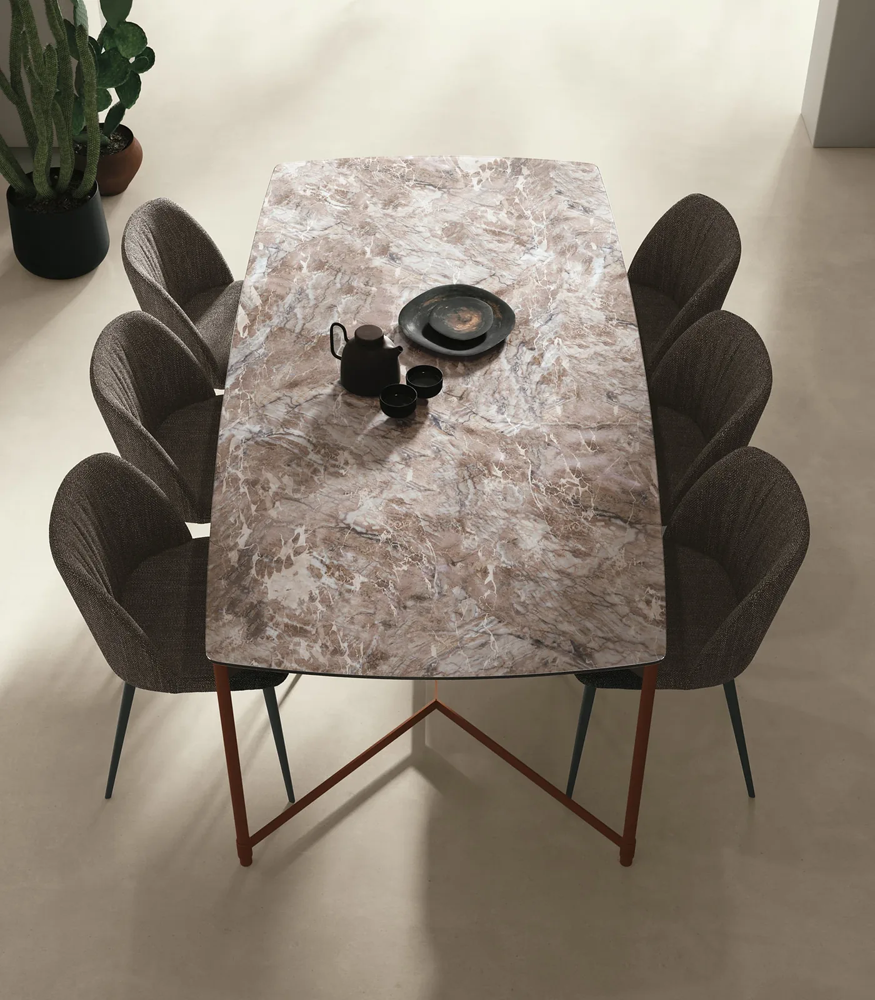
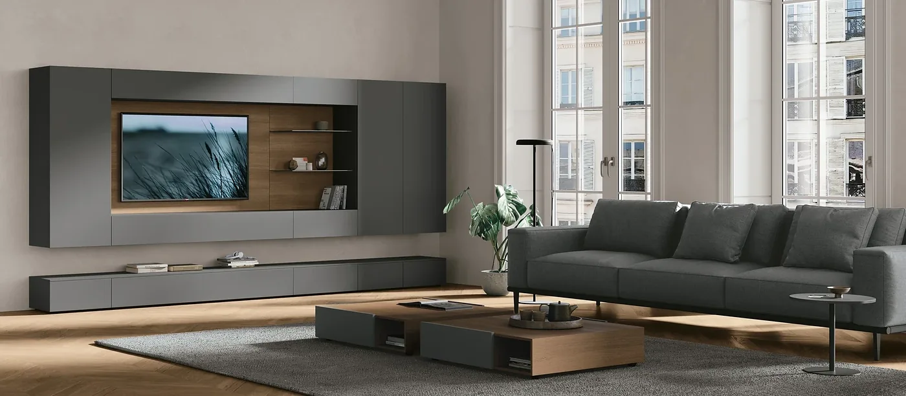
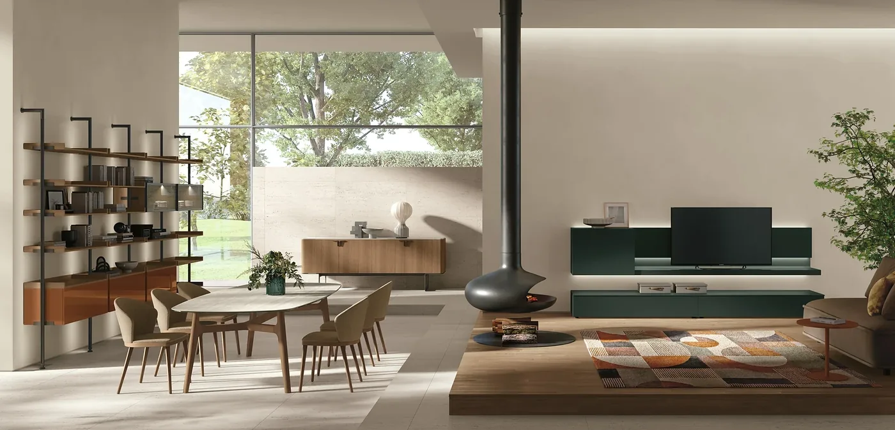

Espace de vie
Un lieu où l’on aime se retrouver.
La table est là, le canapé aussi, et vous cherchez encore comment les réunir. Partons de ce que vous aimez déjà dans votre pièce de vie.
- Salons, relax et tables à essayer
- Première visite et conseil offerts
- Du lundi au samedi, avec ou sans rendez-vous
Dans cet univers
Quatre pièces, un même fil.
-

Salon – Voir les salons
Canapés et fauteuils relax en cuir ou en tissu, à découvrir et à essayer.
-

Salle à manger – Voir les tables
Tables fixes et extensibles, en céramique ou en bois, et chaises assorties.
-

Séjour – Voir le séjour
Meubles TV, buffets et bibliothèques composés selon votre espace.
-

Cuisine – Voir la cuisine
Cuisines italiennes conçues avec vous, livrées et installées.



Une seule pièce
On mange, on se pose, on se parle.
Photo Tomasella.


Dans la pièce
Chaque coin a son moment.
-

À table
-

Le plateau
-

Devant l’écran
-

Près du feu
Par où commencer
Par où commencer
Ce qui se décide en premier.
Vous meublez votre pièce de vie, en entier ou meuble après meuble ? Voici nos repères, pièce par pièce.
-
Le salon
Un canapé se choisit assis : comparez les assises, les revêtements et les fonctions de confort. Nos canapés et fauteuils relax sont italiens et européens, avec notamment Max Divani et Nicoletti. Deux exemples : le Zebra, en angle avec chaise longue ou en deux et trois places, et le Gala, aux formes souples. Vous hésitez entre relax et releveur ? Le relax permet de s’incliner et de relever les jambes ; le fauteuil releveur ajoute une aide pour se mettre debout.
-
La salle à manger
Partez du nombre de convives plutôt que de la longueur, et choisissez la table et les chaises ensemble, pour que les hauteurs s’accordent. Côté tables et chaises : des tables fixes et extensibles, en céramique ou en bois, de Cattelan Italia, Sedit, Akante et Perfecta. Pour une table à rallonge, comparez les dimensions fermée et ouverte, modèle par modèle : la Missouri, par exemple, reçoit jusqu’à douze convives, rallonges ouvertes.
-
Le séjour
Que souhaitez-vous ranger, exposer ou dissimuler ? Meuble TV, bibliothèque et buffet se composent module par module, selon votre mur, avec les systèmes Tomasella. Notre page Séjour détaille ces compositions. Si le mur a un recoin ou une pente, le sur mesure prend le relais.
-
La cuisine
Les cuisines Stosa, fabriquées en Italie, sont conçues avec vous à partir des mesures de votre pièce, puis livrées et installées. Les façades, les coloris et les plans de travail se choisissent au magasin, échantillons en main. La gamme et ses quatre familles sont présentées dans la rubrique Cuisine ; et parmi nos réalisations, notre première cuisine Stosa, en vidéo.
Un meuble à la fois, ou toute la pièce
Accorder l’ensemble
Un meuble à la fois, ou toute la pièce.
-
Vous changez un seul meuble
Photographiez la table, le sol et les meubles voisins dans la même lumière. Au magasin, cette vue nous aide à choisir ce qui ira chez vous. Voyez comment ce séjour a pris forme en deux temps.
-
Vous refaites toute la pièce
Imaginez un soir où les chaises sont tirées et le canapé occupé. Par où passez-vous pour aller de la cuisine au salon ? Dessinons d’abord ce passage, puis regardons ensemble les matières et les teintes.
-
Vous voulez voir avant de décider
Pour un séjour composé module par module, nous vous montrons le projet en projection 3D. Et si vous le souhaitez, nous venons prendre les mesures chez vous. Nos réalisations racontent des projets accompagnés de la première idée à l’installation.
Pour le reste de la maison : la literie et la chambre sont dans l’espace nuit ; les dressings, les bibliothèques et le sur mesure dans rangements et aménagement.
Conseils
Pour préparer votre visite.
-
Quelle taille de table pour 4, 6 ou 8 ?
La place de chacun et la place autour.
Lire le guide -
Table basse : quelle taille, quelle hauteur ?
Trois repères et un essai au carton.
Lire le guide -
Créer un coin lecture dans le salon
Le fauteuil, la lampe et la place autour.
Lire le guide -
Aménager sa maison selon son projet
Par où commencer quand la vie change.
Lire le guide -
Une petite cuisine ouverte sur le salon
Les trajets à dessiner avant les meubles.
Lire le guide
Venez voir et essayer au magasin.
Apportez les dimensions de votre pièce et, si possible, une photo. Nous accordons avec vous les matières du canapé, de la table et des meubles.
Partager cette page
- Lundi
- 13h30 – 18h30
- Mardi au samedi
- 10h30 – 18h30
- Dimanche
- Fermé
- Téléphone
- 064 46 07 72
- Livraison
- Par nos soins, dans le Hainaut (Binche, La Louvière, Mons, Charleroi…) et la province de Namur
Nous livrons aussi dans le nord de la France. Ailleurs, dont Bruxelles : sur demande.